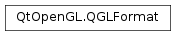

QGLFormat¶
Synopsis¶
Functions¶
- def
__eq__(, arg__2) - def
__ne__(, arg__2) - def
accum() - def
accumBufferSize() - def
alpha() - def
alphaBufferSize() - def
blueBufferSize() - def
depth() - def
depthBufferSize() - def
directRendering() - def
doubleBuffer() - def
greenBufferSize() - def
hasOverlay() - def
majorVersion() - def
minorVersion() - def
plane() - def
profile() - def
redBufferSize() - def
rgba() - def
sampleBuffers() - def
samples() - def
setAccum(enable) - def
setAccumBufferSize(size) - def
setAlpha(enable) - def
setAlphaBufferSize(size) - def
setBlueBufferSize(size) - def
setDepth(enable) - def
setDepthBufferSize(size) - def
setDirectRendering(enable) - def
setDoubleBuffer(enable) - def
setGreenBufferSize(size) - def
setOption(opt) - def
setOverlay(enable) - def
setPlane(plane) - def
setProfile(profile) - def
setRedBufferSize(size) - def
setRgba(enable) - def
setSampleBuffers(enable) - def
setSamples(numSamples) - def
setStencil(enable) - def
setStencilBufferSize(size) - def
setStereo(enable) - def
setSwapInterval(interval) - def
setVersion(major, minor) - def
stencil() - def
stencilBufferSize() - def
stereo() - def
swapInterval() - def
testOption(opt)
Static functions¶
- def
defaultFormat() - def
defaultOverlayFormat() - def
fromSurfaceFormat(format) - def
hasOpenGL() - def
hasOpenGLOverlays() - def
openGLVersionFlags() - def
setDefaultFormat(f) - def
setDefaultOverlayFormat(f) - def
toSurfaceFormat(format)
Detailed Description¶
The
PySide2.QtOpenGL.QGLFormatclass specifies the display format of an OpenGL rendering context.A display format has several characteristics:
Double or single buffering.Depth buffer.RGBA or color index mode.Alpha channel.Accumulation buffer.Stencil buffer.Stereo buffers.Direct rendering.Presence of an overlay.Plane of an overlay.Multisample buffers.You can also specify preferred bit depths for the color buffer, depth buffer, alpha buffer, accumulation buffer and the stencil buffer with the functions:
PySide2.QtOpenGL.QGLFormat.setRedBufferSize(),PySide2.QtOpenGL.QGLFormat.setGreenBufferSize(),PySide2.QtOpenGL.QGLFormat.setBlueBufferSize(),PySide2.QtOpenGL.QGLFormat.setDepthBufferSize(),PySide2.QtOpenGL.QGLFormat.setAlphaBufferSize(),PySide2.QtOpenGL.QGLFormat.setAccumBufferSize()andPySide2.QtOpenGL.QGLFormat.setStencilBufferSize().Note that even if you specify that you prefer a 32 bit depth buffer (e.g. with
PySide2.QtOpenGL.QGLFormat.setDepthBufferSize()(32)), the format that is chosen may not have a 32 bit depth buffer, even if there is a format available with a 32 bit depth buffer. The main reason for this is how the system dependant picking algorithms work on the different platforms, and some format options may have higher precedence than others.You create and tell a
PySide2.QtOpenGL.QGLFormatobject what rendering options you want from an OpenGL rendering context.OpenGL drivers or accelerated hardware may or may not support advanced features such as alpha channel or stereographic viewing. If you request some features that the driver/hardware does not provide when you create a
PySide2.QtOpenGL.QGLWidget, you will get a rendering context with the nearest subset of features.There are different ways to define the display characteristics of a rendering context. One is to create a
PySide2.QtOpenGL.QGLFormatand make it the default for the entire application:fmt = QGLFormat() fmt.setAlpha(True) fmt.setStereo(True) QGLFormat.setDefaultFormat(fmt)Or you can specify the desired format when creating an object of your
PySide2.QtOpenGL.QGLWidgetsubclass:fmt = QGLFormat() fmt.setDoubleBuffer(False) # single buffer fmt.setDirectRendering(False) # software rendering myWidget = MyGLWidget(fmt, ...)After the widget has been created, you can find out which of the requested features the system was able to provide:
fmt = QGLFormat() fmt.setOverlay(True) fmt.setStereo(True) myWidget = MyGLWidget(fmt, ...) if !myWidget.format().stereo(): # ok, goggles off if !myWidget.format().hasOverlay(): print "Cool hardware required"OpenGL is a trademark of Silicon Graphics, Inc. in the United States and other countries.
-
class
PySide2.QtOpenGL.QGLFormat¶ -
class
PySide2.QtOpenGL.QGLFormat(options[, plane=0]) -
class
PySide2.QtOpenGL.QGLFormat(other) Parameters: - options –
PySide2.QtOpenGL.QGL.FormatOptions - other –
PySide2.QtOpenGL.QGLFormat - plane –
PySide2.QtCore.int
Constructs a
PySide2.QtOpenGL.QGLFormatobject with the following default settings:Double buffer:Enabled.Depth buffer:Enabled.RGBA:Enabled (i.e., color index disabled).Alpha channel:Disabled.Accumulator buffer:Disabled.Stencil buffer:Enabled.Stereo:Disabled.Direct rendering:Enabled.Overlay:Disabled.Plane:0 (i.e., normal plane).Multisample buffers:Disabled.
Creates a
PySide2.QtOpenGL.QGLFormatobject that is a copy of the currentPySide2.QtOpenGL.QGLFormat.defaultFormat().If
optionsis not 0, the default format is modified by the specified format options. Theoptionsparameter should beQGL.FormatOptionvalues OR’ed together.This constructor makes it easy to specify a certain desired format in classes derived from
PySide2.QtOpenGL.QGLWidget, for example:# The rendering in MyGLWidget depends on using # stencil buffer and alpha channel class MyGLWidget(QGLWidget): def __init__(self, parent): QGLWidget.__init__(self, QGLFormat(QGL.StencilBuffer | QGL.AlphaChannel), parent) if !format().stencil(): print "Could not get stencil buffer results will be suboptimal" if !format().alpha(): print "Could not get alpha channel results will be suboptimal" ...Note that there are
QGL.FormatOptionvalues to turn format settings both on and off, e.g.QGL.DepthBufferandQGL.NoDepthBuffer,QGL.DirectRenderingandQGL.IndirectRendering, etc.The
planeparameter defaults to 0 and is the plane which this format should be associated with. Not all OpenGL implementations supports overlay/underlay rendering planes.See also
PySide2.QtOpenGL.QGLFormat.defaultFormat()PySide2.QtOpenGL.QGLFormat.setOption()PySide2.QtOpenGL.QGLFormat.setPlane()Constructs a copy of
other.- options –
-
PySide2.QtOpenGL.QGLFormat.OpenGLContextProfile¶ This enum describes the OpenGL context profiles that can be specified for contexts implementing OpenGL version 3.2 or higher. These profiles are different from OpenGL ES profiles.
Constant Description QGLFormat.NoProfile OpenGL version is lower than 3.2. QGLFormat.CoreProfile Functionality deprecated in OpenGL version 3.0 is not available. QGLFormat.CompatibilityProfile Functionality from earlier OpenGL versions is available.
Note
This enum was introduced in Qt 4.7.
-
PySide2.QtOpenGL.QGLFormat.OpenGLVersionFlag¶ This enum describes the various OpenGL versions that are recognized by Qt. Use the
QGLFormat.openGLVersionFlags()function to identify which versions that are supported at runtime.Constant Description QGLFormat.OpenGL_Version_None If no OpenGL is present or if no OpenGL context is current. QGLFormat.OpenGL_Version_1_1 OpenGL version 1.1 or higher is present. QGLFormat.OpenGL_Version_1_2 OpenGL version 1.2 or higher is present. QGLFormat.OpenGL_Version_1_3 OpenGL version 1.3 or higher is present. QGLFormat.OpenGL_Version_1_4 OpenGL version 1.4 or higher is present. QGLFormat.OpenGL_Version_1_5 OpenGL version 1.5 or higher is present. QGLFormat.OpenGL_Version_2_0 OpenGL version 2.0 or higher is present. Note that version 2.0 supports all the functionality of version 1.5. QGLFormat.OpenGL_Version_2_1 OpenGL version 2.1 or higher is present. QGLFormat.OpenGL_Version_3_0 OpenGL version 3.0 or higher is present. QGLFormat.OpenGL_Version_3_1 OpenGL version 3.1 or higher is present. Note that OpenGL version 3.1 or higher does not necessarily support all the features of version 3.0 and lower. QGLFormat.OpenGL_Version_3_2 OpenGL version 3.2 or higher is present. QGLFormat.OpenGL_Version_3_3 OpenGL version 3.3 or higher is present. QGLFormat.OpenGL_Version_4_0 OpenGL version 4.0 or higher is present. QGLFormat.OpenGL_Version_4_1 OpenGL version 4.1 or higher is present. QGLFormat.OpenGL_Version_4_2 OpenGL version 4.2 or higher is present. QGLFormat.OpenGL_Version_4_3 OpenGL version 4.3 or higher is present. QGLFormat.OpenGL_ES_CommonLite_Version_1_0 OpenGL ES version 1.0 Common Lite or higher is present. QGLFormat.OpenGL_ES_Common_Version_1_0 OpenGL ES version 1.0 Common or higher is present. The Common profile supports all the features of Common Lite. QGLFormat.OpenGL_ES_CommonLite_Version_1_1 OpenGL ES version 1.1 Common Lite or higher is present. QGLFormat.OpenGL_ES_Common_Version_1_1 OpenGL ES version 1.1 Common or higher is present. The Common profile supports all the features of Common Lite. QGLFormat.OpenGL_ES_Version_2_0 OpenGL ES version 2.0 or higher is present. Note that OpenGL ES version 2.0 does not support all the features of OpenGL ES 1.x. So if is returned, none of the ES 1.x flags are returned. See also http://www.opengl.org for more information about the different revisions of OpenGL.
-
PySide2.QtOpenGL.QGLFormat.accum()¶ Return type: PySide2.QtCore.boolReturns
trueif the accumulation buffer is enabled; otherwise returnsfalse. The accumulation buffer is disabled by default.
-
PySide2.QtOpenGL.QGLFormat.accumBufferSize()¶ Return type: PySide2.QtCore.intReturns the accumulation buffer size.
-
PySide2.QtOpenGL.QGLFormat.alpha()¶ Return type: PySide2.QtCore.boolReturns
trueif the alpha buffer in the framebuffer is enabled; otherwise returnsfalse. The alpha buffer is disabled by default.
-
PySide2.QtOpenGL.QGLFormat.alphaBufferSize()¶ Return type: PySide2.QtCore.intReturns the alpha buffer size.
-
PySide2.QtOpenGL.QGLFormat.blueBufferSize()¶ Return type: PySide2.QtCore.intReturns the blue buffer size.
-
static
PySide2.QtOpenGL.QGLFormat.defaultFormat()¶ Return type: PySide2.QtOpenGL.QGLFormatReturns the default
PySide2.QtOpenGL.QGLFormatfor the application. AllPySide2.QtOpenGL.QGLWidgetobjects that are created use this format unless another format is specified, e.g. when they are constructed.If no special default format has been set using
PySide2.QtOpenGL.QGLFormat.setDefaultFormat(), the default format is the same as that created withPySide2.QtOpenGL.QGLFormat.QGLFormat().
-
static
PySide2.QtOpenGL.QGLFormat.defaultOverlayFormat()¶ Return type: PySide2.QtOpenGL.QGLFormatReturns the default
PySide2.QtOpenGL.QGLFormatfor overlay contexts.The default overlay format is:
Double buffer:Disabled.Depth buffer:Disabled.RGBA:Disabled (i.e., color index enabled).Alpha channel:Disabled.Accumulator buffer:Disabled.Stencil buffer:Disabled.Stereo:Disabled.Direct rendering:Enabled.Overlay:Disabled.Multisample buffers:Disabled.Plane:1 (i.e., first overlay plane).
-
PySide2.QtOpenGL.QGLFormat.depth()¶ Return type: PySide2.QtCore.boolReturns
trueif the depth buffer is enabled; otherwise returns false. The depth buffer is enabled by default.
-
PySide2.QtOpenGL.QGLFormat.depthBufferSize()¶ Return type: PySide2.QtCore.intReturns the depth buffer size.
-
PySide2.QtOpenGL.QGLFormat.directRendering()¶ Return type: PySide2.QtCore.boolReturns
trueif direct rendering is enabled; otherwise returns false.Direct rendering is enabled by default.
-
PySide2.QtOpenGL.QGLFormat.doubleBuffer()¶ Return type: PySide2.QtCore.boolReturns
trueif double buffering is enabled; otherwise returns false. Double buffering is enabled by default.
-
static
PySide2.QtOpenGL.QGLFormat.fromSurfaceFormat(format)¶ Parameters: format – PySide2.QtGui.QSurfaceFormatReturn type: PySide2.QtOpenGL.QGLFormatReturns an OpenGL format for the window format specified by
format.
-
PySide2.QtOpenGL.QGLFormat.greenBufferSize()¶ Return type: PySide2.QtCore.intReturns the green buffer size.
-
static
PySide2.QtOpenGL.QGLFormat.hasOpenGL()¶ Return type: PySide2.QtCore.boolReturns
trueif the window system has any OpenGL support; otherwise returnsfalse.Warning
This function must not be called until the
PySide2.QtWidgets.QApplicationobject has been created.
-
static
PySide2.QtOpenGL.QGLFormat.hasOpenGLOverlays()¶ Return type: PySide2.QtCore.boolReturns
trueif the window system supports OpenGL overlays; otherwise returnsfalse.Warning
This function must not be called until the
PySide2.QtWidgets.QApplicationobject has been created.
-
PySide2.QtOpenGL.QGLFormat.hasOverlay()¶ Return type: PySide2.QtCore.boolReturns
trueif overlay plane is enabled; otherwise returnsfalse.Overlay is disabled by default.
-
PySide2.QtOpenGL.QGLFormat.majorVersion()¶ Return type: PySide2.QtCore.intReturns the OpenGL major version.
-
PySide2.QtOpenGL.QGLFormat.minorVersion()¶ Return type: PySide2.QtCore.intReturns the OpenGL minor version.
-
static
PySide2.QtOpenGL.QGLFormat.openGLVersionFlags()¶ Return type: PySide2.QtOpenGL.QGLFormat.OpenGLVersionFlagsIdentifies, at runtime, which OpenGL versions that are supported by the current platform.
Note that if OpenGL version 1.5 is supported, its predecessors (i.e., version 1.4 and lower) are also supported. To identify the support of a particular feature, like multi texturing, test for the version in which the feature was first introduced (i.e., version 1.3 in the case of multi texturing) to adapt to the largest possible group of runtime platforms.
This function needs a valid current OpenGL context to work; otherwise it will return
OpenGL_Version_None.
-
PySide2.QtOpenGL.QGLFormat.__ne__(arg__2)¶ Parameters: arg__2 – PySide2.QtOpenGL.QGLFormatReturn type: PySide2.QtCore.bool
-
PySide2.QtOpenGL.QGLFormat.__eq__(arg__2)¶ Parameters: arg__2 – PySide2.QtOpenGL.QGLFormatReturn type: PySide2.QtCore.bool
-
PySide2.QtOpenGL.QGLFormat.plane()¶ Return type: PySide2.QtCore.intReturns the plane of this format. The default for normal formats is 0, which means the normal plane. The default for overlay formats is 1, which is the first overlay plane.
-
PySide2.QtOpenGL.QGLFormat.profile()¶ Return type: PySide2.QtOpenGL.QGLFormat.OpenGLContextProfileReturns the OpenGL context profile.
-
PySide2.QtOpenGL.QGLFormat.redBufferSize()¶ Return type: PySide2.QtCore.intReturns the red buffer size.
-
PySide2.QtOpenGL.QGLFormat.rgba()¶ Return type: PySide2.QtCore.boolReturns
trueif RGBA color mode is set. Returnsfalseif color index mode is set. The default color mode is RGBA.See also
-
PySide2.QtOpenGL.QGLFormat.sampleBuffers()¶ Return type: PySide2.QtCore.boolReturns
trueif multisample buffer support is enabled; otherwise returnsfalse.The multisample buffer is disabled by default.
-
PySide2.QtOpenGL.QGLFormat.samples()¶ Return type: PySide2.QtCore.intReturns the number of samples per pixel when multisampling is enabled. By default, the highest number of samples that is available is used.
-
PySide2.QtOpenGL.QGLFormat.setAccum(enable)¶ Parameters: enable – PySide2.QtCore.boolIf
enableis true enables the accumulation buffer; otherwise disables the accumulation buffer.The accumulation buffer is disabled by default.
The accumulation buffer is used to create blur effects and multiple exposures.
-
PySide2.QtOpenGL.QGLFormat.setAccumBufferSize(size)¶ Parameters: size – PySide2.QtCore.intSet the preferred accumulation buffer size, where
sizeis the bit depth for each RGBA component.
-
PySide2.QtOpenGL.QGLFormat.setAlpha(enable)¶ Parameters: enable – PySide2.QtCore.boolIf
enableis true enables the alpha buffer; otherwise disables the alpha buffer.The alpha buffer is disabled by default.
The alpha buffer is typically used for implementing transparency or translucency. The A in RGBA specifies the transparency of a pixel.
-
PySide2.QtOpenGL.QGLFormat.setAlphaBufferSize(size)¶ Parameters: size – PySide2.QtCore.intSet the preferred alpha buffer size to
size. This function implicitly enables the alpha channel.
-
PySide2.QtOpenGL.QGLFormat.setBlueBufferSize(size)¶ Parameters: size – PySide2.QtCore.intSet the preferred blue buffer size to
size.
-
static
PySide2.QtOpenGL.QGLFormat.setDefaultFormat(f)¶ Parameters: f – PySide2.QtOpenGL.QGLFormatSets a new default
PySide2.QtOpenGL.QGLFormatfor the application tof. For example, to set single buffering as the default instead of double buffering, your main() might contain code like this:a = QApplication([]) f = QGLFormat() f.setDoubleBuffer(False) QGLFormat.setDefaultFormat(f)
-
static
PySide2.QtOpenGL.QGLFormat.setDefaultOverlayFormat(f)¶ Parameters: f – PySide2.QtOpenGL.QGLFormatSets a new default
PySide2.QtOpenGL.QGLFormatfor overlay contexts tof. This format is used whenever aPySide2.QtOpenGL.QGLWidgetis created with a format thatPySide2.QtOpenGL.QGLFormat.hasOverlay()enabled.For example, to get a double buffered overlay context (if available), use code like this:
f = QGLFormat.defaultOverlayFormat() f.setDoubleBuffer(True) QGLFormat.setDefaultOverlayFormat(f)
As usual, you can find out after widget creation whether the underlying OpenGL system was able to provide the requested specification:
# ...continued from above myWidget = MyGLWidget(QGLFormat(QGL.HasOverlay), ...) if myWidget.format().hasOverlay(): # Yes, we got an overlay, let's check _its_ format: olContext = myWidget.overlayContext() if olContext.format().doubleBuffer(): # yes, we got a double buffered overlay else: # no, only single buffered overlays are available
-
PySide2.QtOpenGL.QGLFormat.setDepth(enable)¶ Parameters: enable – PySide2.QtCore.boolIf
enableis true enables the depth buffer; otherwise disables the depth buffer.The depth buffer is enabled by default.
The purpose of a depth buffer (or Z-buffering) is to remove hidden surfaces. Pixels are assigned Z values based on the distance to the viewer. A pixel with a high Z value is closer to the viewer than a pixel with a low Z value. This information is used to decide whether to draw a pixel or not.
-
PySide2.QtOpenGL.QGLFormat.setDepthBufferSize(size)¶ Parameters: size – PySide2.QtCore.intSet the minimum depth buffer size to
size.
-
PySide2.QtOpenGL.QGLFormat.setDirectRendering(enable)¶ Parameters: enable – PySide2.QtCore.boolIf
enableis true enables direct rendering; otherwise disables direct rendering.Direct rendering is enabled by default.
Enabling this option will make OpenGL bypass the underlying window system and render directly from hardware to the screen, if this is supported by the system.
-
PySide2.QtOpenGL.QGLFormat.setDoubleBuffer(enable)¶ Parameters: enable – PySide2.QtCore.boolIf
enableis true sets double buffering; otherwise sets single buffering.Double buffering is enabled by default.
Double buffering is a technique where graphics are rendered on an off-screen buffer and not directly to the screen. When the drawing has been completed, the program calls a swapBuffers() function to exchange the screen contents with the buffer. The result is flicker-free drawing and often better performance.
Note that single buffered contexts are currently not supported with EGL.
-
PySide2.QtOpenGL.QGLFormat.setGreenBufferSize(size)¶ Parameters: size – PySide2.QtCore.intSet the preferred green buffer size to
size.
-
PySide2.QtOpenGL.QGLFormat.setOption(opt)¶ Parameters: opt – PySide2.QtOpenGL.QGL.FormatOptionsSets the format option to
opt.
-
PySide2.QtOpenGL.QGLFormat.setOverlay(enable)¶ Parameters: enable – PySide2.QtCore.boolIf
enableis true enables an overlay plane; otherwise disables the overlay plane.Enabling the overlay plane will cause
PySide2.QtOpenGL.QGLWidgetto create an additional context in an overlay plane. See thePySide2.QtOpenGL.QGLWidgetdocumentation for further information.
-
PySide2.QtOpenGL.QGLFormat.setPlane(plane)¶ Parameters: plane – PySide2.QtCore.intSets the requested plane to
plane. 0 is the normal plane, 1 is the first overlay plane, 2 is the second overlay plane, etc.; -1, -2, etc. are underlay planes.Note that in contrast to other format specifications, the plane specifications will be matched exactly. This means that if you specify a plane that the underlying OpenGL system cannot provide, an
invalidPySide2.QtOpenGL.QGLWidgetwill be created.See also
-
PySide2.QtOpenGL.QGLFormat.setProfile(profile)¶ Parameters: profile – PySide2.QtOpenGL.QGLFormat.OpenGLContextProfileSet the OpenGL context profile to
profile. Theprofileis ignored if the requested OpenGL version is less than 3.2.See also
-
PySide2.QtOpenGL.QGLFormat.setRedBufferSize(size)¶ Parameters: size – PySide2.QtCore.intSet the preferred red buffer size to
size.
-
PySide2.QtOpenGL.QGLFormat.setRgba(enable)¶ Parameters: enable – PySide2.QtCore.boolIf
enableis true sets RGBA mode. Ifenableis false sets color index mode.The default color mode is RGBA.
RGBA is the preferred mode for most OpenGL applications. In RGBA color mode you specify colors as red + green + blue + alpha quadruplets.
In color index mode you specify an index into a color lookup table.
See also
-
PySide2.QtOpenGL.QGLFormat.setSampleBuffers(enable)¶ Parameters: enable – PySide2.QtCore.boolIf
enableis true, a GL context with multisample buffer support is picked; otherwise ignored.
-
PySide2.QtOpenGL.QGLFormat.setSamples(numSamples)¶ Parameters: numSamples – PySide2.QtCore.intSet the preferred number of samples per pixel when multisampling is enabled to
numSamples. By default, the highest number of samples available is used.
-
PySide2.QtOpenGL.QGLFormat.setStencil(enable)¶ Parameters: enable – PySide2.QtCore.boolIf
enableis true enables the stencil buffer; otherwise disables the stencil buffer.The stencil buffer is enabled by default.
The stencil buffer masks certain parts of the drawing area so that masked parts are not drawn on.
-
PySide2.QtOpenGL.QGLFormat.setStencilBufferSize(size)¶ Parameters: size – PySide2.QtCore.intSet the preferred stencil buffer size to
size.
-
PySide2.QtOpenGL.QGLFormat.setStereo(enable)¶ Parameters: enable – PySide2.QtCore.boolIf
enableis true enables stereo buffering; otherwise disables stereo buffering.Stereo buffering is disabled by default.
Stereo buffering provides extra color buffers to generate left-eye and right-eye images.
See also
-
PySide2.QtOpenGL.QGLFormat.setSwapInterval(interval)¶ Parameters: interval – PySide2.QtCore.intSet the preferred swap interval. This can be used to sync the GL drawing into a system window to the vertical refresh of the screen. Setting an
intervalvalue of 0 will turn the vertical refresh syncing off, any value higher than 0 will turn the vertical syncing on.Under Windows and under X11, where the
WGL_EXT_swap_controlandGLX_SGI_video_syncextensions are used, theintervalparameter can be used to set the minimum number of video frames that are displayed before a buffer swap will occur. In effect, setting theintervalto 10, means there will be 10 vertical retraces between every buffer swap.Under Windows the
WGL_EXT_swap_controlextension has to be present, and under X11 theGLX_SGI_video_syncextension has to be present.
-
PySide2.QtOpenGL.QGLFormat.setVersion(major, minor)¶ Parameters: - major –
PySide2.QtCore.int - minor –
PySide2.QtCore.int
Set the OpenGL version to the
majorandminornumbers. If a context compatible with the requested OpenGL version cannot be created, a context compatible with version 1.x is created instead.- major –
-
PySide2.QtOpenGL.QGLFormat.stencil()¶ Return type: PySide2.QtCore.boolReturns
trueif the stencil buffer is enabled; otherwise returns false. The stencil buffer is enabled by default.
-
PySide2.QtOpenGL.QGLFormat.stencilBufferSize()¶ Return type: PySide2.QtCore.intReturns the stencil buffer size.
-
PySide2.QtOpenGL.QGLFormat.stereo()¶ Return type: PySide2.QtCore.boolReturns
trueif stereo buffering is enabled; otherwise returns false. Stereo buffering is disabled by default.
-
PySide2.QtOpenGL.QGLFormat.swapInterval()¶ Return type: PySide2.QtCore.intReturns the currently set swap interval. -1 is returned if setting the swap interval isn’t supported in the system GL implementation.
-
PySide2.QtOpenGL.QGLFormat.testOption(opt)¶ Parameters: opt – PySide2.QtOpenGL.QGL.FormatOptionsReturn type: PySide2.QtCore.boolReturns
trueif format optionoptis set; otherwise returnsfalse.
-
static
PySide2.QtOpenGL.QGLFormat.toSurfaceFormat(format)¶ Parameters: format – PySide2.QtOpenGL.QGLFormatReturn type: PySide2.QtGui.QSurfaceFormatReturns a window format for the OpenGL format specified by
format.
© 2018 The Qt Company Ltd. Documentation contributions included herein are the copyrights of their respective owners. The documentation provided herein is licensed under the terms of the GNU Free Documentation License version 1.3 as published by the Free Software Foundation. Qt and respective logos are trademarks of The Qt Company Ltd. in Finland and/or other countries worldwide. All other trademarks are property of their respective owners.